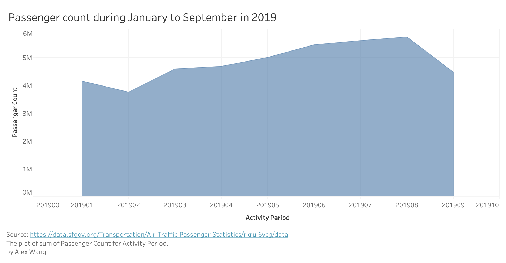

Area Chart
Passenger count during January to September in 2019
This visualization shows passenger count during January to September in 2019 in SFO.
Data
- Passenger Count: A quantitative discrete variable, representing number of passengers. In range of 3752763 to 5742437.
- Activity Period: A categorical variable, represents the month in 2019. In range of 01 to 09 in this visualization.
Prototype:
d3.js version:
Source : https://data.sfgov.org/Transportation/Air-Traffic-Passenger-Statistics/rkru-6vcg/data The plot of sum of Passenger Count for Activity Period.
Instructions
The Y-axis represents passenger count and X-axis represents activity period. The passenger count is encoded by the height of the area, so higher positions represent higher passenger count. The sequence of X-axis is chronological.
Discussion
Wrangling
The dataset was chosen in range of greater than 201812 in Activity Period for fetching data for year of 2019. Filtering was applied on the website interface of original dataset.
Conclusion
The volume of passenger is increasing from Feburary to August, and reached the max in August. There is possibility that activities of traveling by flights differs among months, or potentially among seasons, but it worths further studies.
Acknowledgements
Link to insiration
Link to StackOverflow snippet
Thanks to Person Name for their suggestion to do something with the visualization.